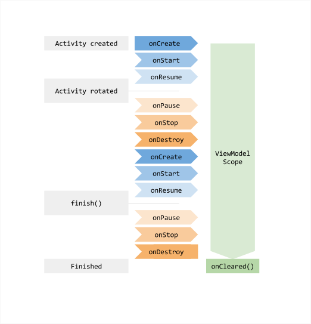

ViewModel
ViewModel 类是被设计用来存储和管理 UI 相关的数据，以便在配置更改（如：屏幕旋转）时数据可以保留下来。
应用程序组件（如：activity 和 fragment）具有一个由 Android Framework 管理的生命周期。Framework 可能会完全不受控制的根据某些用户操作或设备事件来决定销毁或重新创建它们。
由于这些对象有可能被操作系统销毁或重新创建，所以保存在它们中的任何数据都会丢失。例如：如果 activity 中有一个用户列表，当 activity 因为配置更改而重新创建时，新的 activity 必须重新获取用户列表。对于简单的数据，activity 可以使用 onSaveInstanceState() 方法从 onCreate() 中的 bundle 里恢复数据，但是这种方式只适用于少量数据（如：UI 状态），不适用于大量数据（如：用户列表）。
另一个问题是，这些 UI 控制器（activity，fragment 等）经常需要发起一些需要一定时间才能返回的异步调用。UI 控制器需要管理这些调用并且在其被销毁时清理它们避免潜在的内存泄漏。这需要大量的维护工作，并且在由于配置更改导致对象被重新创建的情况下十分浪费资源，因为需要重新发起相同的请求。
这些 UI 控制器已经需要完成响应用户操作和处理操作系统通信的工作了。当它们还需要手动处理其资源时，将会使类变的臃肿，创造“万能 activity”（或“万能 fragment”）；也就是说，一个单独的类视图自己处理应用程序的所有工作，而不是将工作委派给其它类。这将会使测试非常困难。
将视图数据的所有权从 UI 控制器的逻辑中分离出来是简单高效的。Lifecycle 提供了一个叫 ViewModel 的新类，一个 UI 控制器的帮助类，用来为 UI 准备数据。在配置更改期间，ViewModel 会自动保留，以便其保存的数据能够立即提供给下一个 activity 或 fragment 实例。在我们上面提到的例子中，获取并持有数据是 ViewModel 的责任，而不是 activity 或 fragment 的。
public class MyViewModel extends ViewModel {
private MutableLiveData<List<User>> users;
public LiveData<List<User>> getUsers() {
if (users == null) {
users = new MutableLiveData<List<Users>>();
loadUsers();
}
return users;
}
private void loadUsers() {
// 执行异步操作获取用户
}
}
现在 activity 可以像下面这样访问列表：
public class MyActivity extends AppCompatActivity {
public void onCreate(Bundle savedInstanceState) {
MyViewModel model = ViewModelProviders.of(this).get(MyViewModel.class);
model.getUsers().observe(this, users -> {
// 更新 UI
});
}
}
如果 activity 被重新创建，它将会收到由之前 activity 创建的同一个 MyViewModel 实例。当所有者 activity 结束后，Framework 会调用 ViewModel 的 onCleared() 方法来清理资源。
注：由于 ViewModel 存活的比个别的 activity 和 fragment 实例，所以它决不能引用 View，或任何持有 activity context 的引用的类。如果 ViewModel 需要 Application 的 context（如：调用系统服务），可以继承 AndroidViewModel 类，可以在构造函数中接受 Application（因为 Application 继承了 Context）。
在 Fragment 之间共享数据
activity 中的两个或多个 fragment 需要相互通信是很常见的。这不是个简单的事情，所有的 fragment 都需要定义一些接口描述，并且拥有它们的 activity 必须将两者绑定在一起。另外，所有的 fragment 必须处理其它的 fragment 没有被创建或不可见的情况。
使用 ViewModel 可以解决这个常见的痛点。假设一个主从式 fragment 的常见情况，用户从一个 fragment 的列表里选中一项，另一个 fragment 显示所选项的内容。
这些 fragment 可以使用其 activity 限定的 ViewModel 来处理该通讯
public class SharedViewModel extends ViewModel {
private final MutableLiveData<Item> selected = new MutableLiveData<Item>();
public void select(Item item) {
selected.setValue(item);
}
public LiveData<Item> getSelected() {
return selected;
}
}
public class MasterFragment extends Fragment {
private SharedViewModel model;
public void onActivityCreated() {
model = ViewModelProviders.of(getActivity()).get(SharedViewModel.class);
itemSelector.setOnClickListener(item -> {
model.select(item);
});
}
}
public class DetailFragment extends LifecycleFragment {
public void onActivityCreated() {
SharedViewModel model = ViewModelProviders.of(getActivity()).get(SharedViewModel.class);
model.getSelected().observe(this, { item ->
// 更新 UI
});
}
}
请注意，在获取 ViewModelProvider 时两个 fragment 都使用 getActivity() 方法。这意味着它们都将会收到被 activity 限定的同一个 SharedViewModel 实例。
这种方式的优点有：
activity 不需要做或知道关于该通讯的任何事情。
- 除了 SharedViewModel 协议之外 fragment 不需要了解彼此。如果其中一个消失，另一个会照常工作。
- 每个 fragment 有自己的生命周期，并且不受其它 fragment 的生命周期影响。实际上，在 UI 中一个 fragment 替换另一个 fragment，UI 的运行没有任何问题。
ViewModel 的生命周期
在获取 ViewModel 时，ViewModel 对象被传递给 ViewModelProvider 的 Lifecycle 限定。ViewModel 保留在内存中，直到限定它的 Lifecycle 永久消失（当 activity 结束或 fragment 被分离）。
